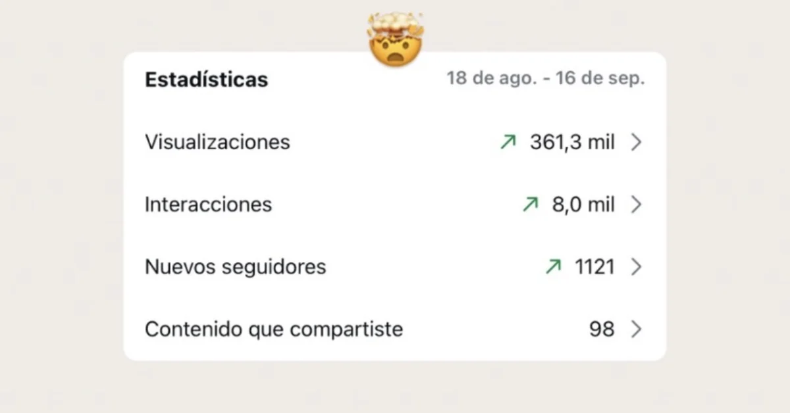
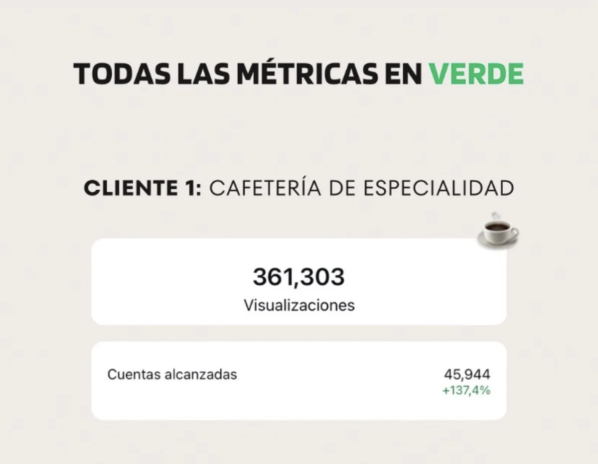

← ProyectosContenido y pauta en Meta
Velina Café
Trabajé aproximadamente seis meses como Community Manager freelance. Velina ya tenía presencia en Liniers y me sumé para acompañar la inauguración de su nuevo local en Villa Luro.
Del centro de producción a Instagram
Mostramos el detrás de escena de los laminados y los productos de la cafetería. Adaptamos tendencias y acompañamos el contenido con campañas en Meta.
45.944 cuentas alcanzadas
Del 18 de agosto al 16 de septiembre de 2025, el alcance aumentó un 137,4% frente al período de comparación. La cuenta registró 361.303 visualizaciones, alrededor de 8.000 interacciones y 1.121 nuevos seguidores. Al finalizar mi gestión tenía más de 12.000 seguidores.

Actividad en Instagram durante el período
Visualizaciones y cuentas alcanzadas